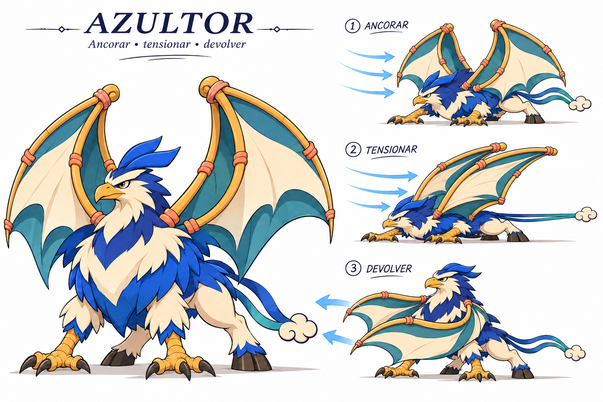

Azultor A · ancorar, tensionar, devolver
Proposta de especialidade em revisão. Quatro apoios e duas asas-vela cooperam para receber uma rajada e devolvê-la. A preparação exige apoio e expõe os flancos — limitação sugerida, sem regra implementada.

Concept realizado com image_gen integrada. Imagens próprias do projeto como referências. Teste de design; não é rig ou animação final.